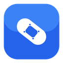

One-step setup. Click Copy prompt for Claude, paste it into Claude Code, and do what it says. That single prompt registers the bridge, has Claude restart, and starts watching your edits — no pairing token, no port.
Not on npm yet? The prompt carries a local-path fallback — point it at this repo's bridge/src/index.js. The extension then finds the bridge on 127.0.0.1 by itself.